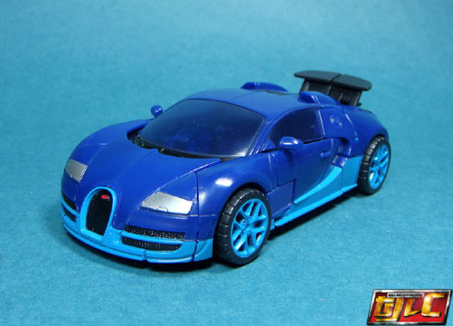 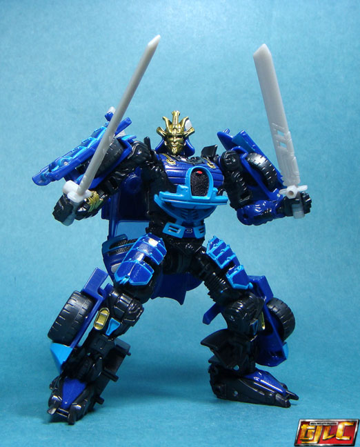
Size : Deluxe
Difficulty of Transformation : Medium
Color Scheme : Dark blue, teal, black, and some silver, light milky gray, metallic gold, dark red, dull dark blue, and transparent dark blue
Individual Rating : 8.7
Allegiances
: Autobot
Set Price
: $100 (U.S.)
(NOTE: Because this set is composed of repaints,
this is not a full-blown review. This mainly covers any changes made to
the set and the color scheme, and merely compares it to the original versions
of these molds. For a review on the mass-release AoE deluxe Autobot Drift,
go
here
. For a review on the mass-release AoE
voyager Autobot Hound, go
here
. For a review
on the mass-release AoE deluxe Concept Camaro Bumblebee, go
here
.
For a review on the mass-release AoE deluxe Crosshairs, go
here
.
For a review on the mass-release AoE voyager Evasion Mode Optimus Prime,
go
here
.)
 Autobot
Drift
Autobot
Drift
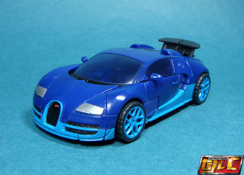
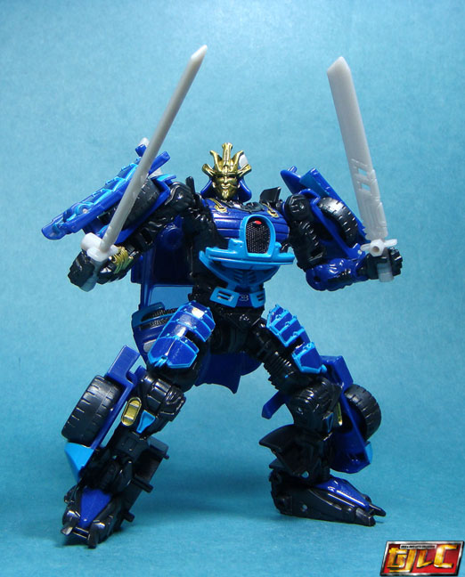
Size
: Deluxe
Difficulty of Transformation
: Medium
Color Scheme
: Dark blue, teal, black,
and some silver, light milky gray, metallic gold, dark red, dull dark blue,
and transparent dark blue
Individual Rating
: 8.7
The "Autobots United"
set isn't much of a themed set-- rather, it's more of a giftset of the
same main five AoE Autobots, with largely the same color schemes, as the
mass-released versions-- only with "premium" paint apps. For Drift, the
differences in vehicle mode are pretty minimal-- the exposed engine behind
the windows is now actually painted silver. In addition, the metallic teal
from the mass release version is now a more normal, light teal that pops
even better against the dark blue, despite the lack of a metallic look.
This same teal is also used for the wheel hubs on Drift, as opposed to
silver on the mass retail version. The grills on the side of the front
are also now painted black. It's in robot mode that Drift really starts
to look aces. First, the only downside-- his swords are now that ugly light
milky gray, compared to the brownish gold of the mass release. Of course,
the general color is more accurate to the movie, but I would've preferred
a metallic shade of the color instead. The big improvement here is that
the metallic teal-coated "armor" on the upper legs and plates along the
sides of his upper arms has been replaced with a REALLY NICE teal outlining
of said armor plates, with dark blue plastic showing through in the center
of the armor plates. It gives a really nice "weathered" effect, and also
just really ups the contrast and eye-appeal of Drift. The gold on Drift
is also a more metallic shade this time around and pops more, and has also
been added to his lower arms, small bits on his lower legs, and small bits
on the sides of his neck. A few more, minor, details have been painted;
there's now a small dark blue area near Drift's waist with the Bugatti
logo on it, there's an additional teal paint app on his lower legs, and
dark blue paint apps on his feet. His hands are also now black plastic,
compared to the original's dark blue, added for more color variety.
No mold changes have
been made to this version of Drift.
 Autobot
Hound
Autobot
Hound
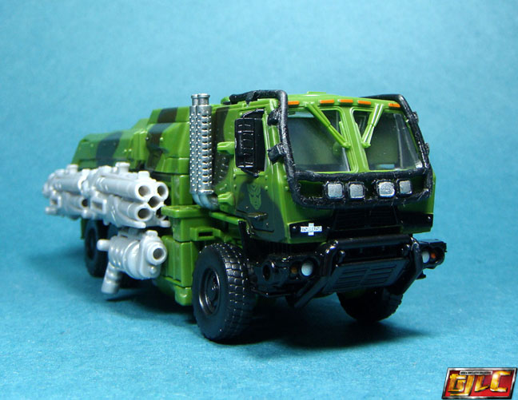
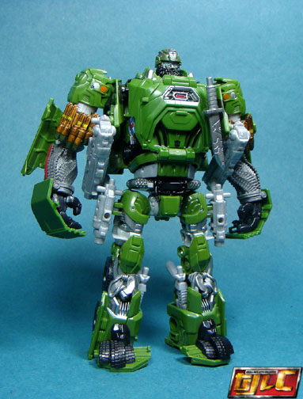
Size
: Voyager
Difficulty of Transformation
: Medium
Color Scheme
: Forest green, light
gray, black, and some clear plastic, silver, light electric blue, light
red, semi-metallic gray, and metallic copper
Rating
: 9.0
Hound is one of biggest
changes in the set, with most of the changes relating to his vehicle mode
and base plastic color, the latter of which is now a lighter, forest-y
green compared to the dull bluish green of the mass release-- this green
may be a TOUCH lighter than that on Hound in the movie, but it's considerably
closer than the mass-release version. Even better are the added black "military
camo" paint apps on the vehicle mode which were very, VERY badly needed
to help break up all that green, and which really look nice from any view
approaching the side. His guns' base color has also been changed, from
a light milky gray to a more straightforward light gray-- so light it's
actually approaching white, in fact. This allows for better contrast, but
still makes them look rather plain without some sort of gunmetal coloring
to them. The bars along the front side of Hound's vehicle mode and the
section near the middle are also now black compared to gray, and this change
enhances contrast and is another plus, I think. The other changes to Hound
have to do with added paint apps that were not on the mass release. The
front bumper is now painted black; there's a white, red, and blue "star"
emblem along the front side; the Autobot symbols on the side doors are
now "inversed" and actually the regular green plastic "picked out" of the
black camo spot surrounding them; black side mirrors; painted silver smokestacks;
and a bit extra silver paint near the bottom middle of the vehicle mode.
As far as differences that are more apparent in robot mode, Hound has some
red lining along the sides of his lower arms; extra silver detailing on
Hound's helmet and around his "collar"; more silver paint on Hound's upper
legs; and black paint on the fake "bar" detailing on Hound's abs, as well
as black detaling on Hound's waist, like a belt buckle. All of these paint
apps look great, and add visual interest and better screen accuracy to
the toy.
No mold changes have
been made to this version of Hound.
 Bumblebee
Bumblebee
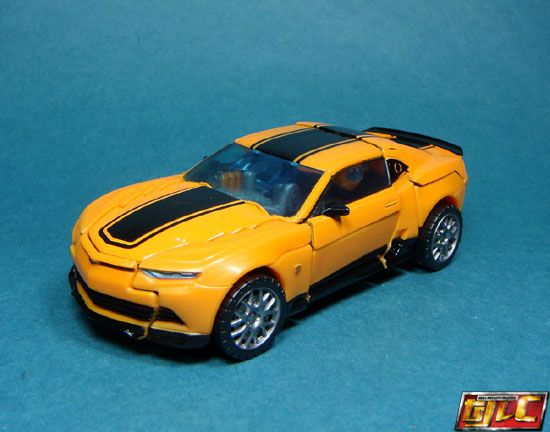
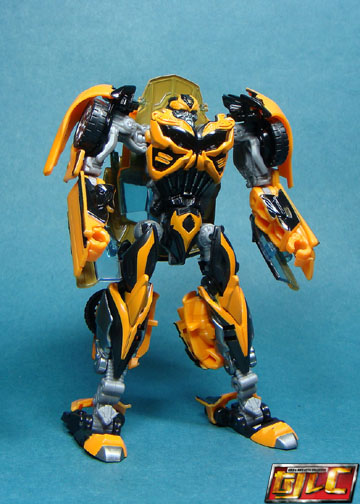
Size
: Deluxe
Difficulty of Transformation
: Medium
Color Scheme
: Black, dull pale orangish
yellow, moderately light orangish "cheese" yellow, transparent light blue,
and some dark metallic silvery blue, light red, silver, and light milky
gray
Individual Rating
: 8.1
Bumblebee is probably
the one in the set where the changes are the least obvious. Most clear
is that in car mode, the details that were missing paint on the mass release
version have been filled in; namely, there's now a black bottom rim painted
around the entire car, the rear view mirrors are black, the wheel hubs
are painted silver, and the taillights are painted red. It makes for a
better appearance, but not substantially so; there's still the problems
with the mismatched paint-and-plastic when it comes to the yellow, for
instance. In robot mode, one really has to have the two versions side-by-side
to see the differences. Basically, in robot mode the only differences are
two additional little yellow stripes along the sides of Bumblebee's fake
"lower car chest" piece, his toes are painted silver, and there's just
a titch of silver along the "springs" molded onto his abs. Other than that,
he's identical to the mass-release.
No mold changes have
been made to this version of Bumblebee.
 Crosshairs
Crosshairs
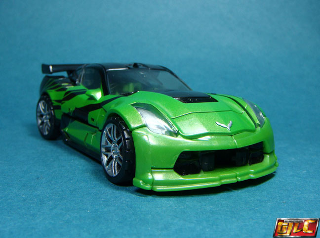
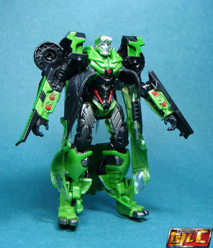
Size
: Deluxe
Difficulty of Transformation
: Medium
Color Scheme
: Black, moderately
light semi-metallic green, clear plastic, and some silver, metallic gunmetal
gray, and light red
Rating
: 8.5
Crosshairs is the most
differentiated (and, in my opinion, improved) from the original release,
though it's not as apparent in vehicle mode. The most obvious change is
that his green plastic and paint has been lightened and made more "glittery",
enhancing how metallic it looks-- the green is pretty much spot-on perfect
when it comes to movie accuracy now, and just pops a little more as well.
Also--- at long last-- BOTH of his sides have the nifty angular stripe
detailing, which was missing on one side on the mass release. (The actual
patterning of the striping is also slightly different near the rear.) The
rear window actually shows through as clear plastic instead of being painted
solid black, and the side rims are now painted black, as well. The Chevrolet
symbol on the hood is now painted silver. The Autobot symbols on the lower
sides are gone, though. The stripe paint apps on the back end have also
been changed slightly, and the tallights are painted red, which REALLY
improves the look of the back end more than you'd think. In robot mode,
the differences beyond plastic color are more obvious, and really make
Crosshairs stand out a LOT more than his mass release version. His shoulders
are now black plastic with green paint on the front, compared to the original's
having green plastic there with a bit of black paint on the top; the clear
plastic used for his eyes is now a regular clear color compared to transparent
blue (the only negative change, in my opinion); his goggles are painted
silver, with less of his face painted silver for a more movie-accurate,
"skinner" look there; he's got little red dot paint apps and black stripe
paint apps along his lower arms; more of his chest is green compared to
the original Crosshairs', but his lower waist and abs are covered in black
paint, with a REALLY nice light red popping out against that color on two
"piston"-like details there, along with a little Autobot symbol on a small
black paint app added to the middle of his chest. There's also a bit of
green added to his pelvis which was black on the original, and his upper
legs-- compared to being just black on the original-- are now painted a
really nice gunmetal gray that just looks superb. The details on his inner
lower legs are the same color, and as opposed to being all-black, his feet
are now green plastic with silver-painted toes. It's pretty much all considerably
more movie-accurate and breaks up Crosshairs' color scheme so much more.
No mold changes have
been made to this version of Crosshairs.
 Optimus
Prime
Optimus
Prime
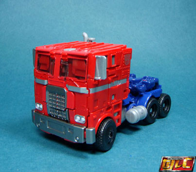
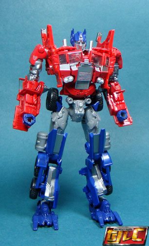
Size
: Voyager
Difficulty of Transformation
: Hard
Color Scheme
: Dark blue, red, milky
light gray, and some black, white, silver, light blue, and clear plastic
Rating
: 9.5
Optimus Prime, like Bumblebee,
has changes, but not so much that he's as dramatic a change, as, say Crosshairs.
The most obvious changes are that his gray plastic is a tad lighter (a
negative, in my opinion), and the stripes along the center of his vehicle
mode are considerably smaller and silver as opposed to white, with the
Autobot symbol on the upper rear side of his cab, in a more "G1-esque"
placement. The headlights are also now painted white, a small change that
adds a surprising amount of pop there. The legs in robot mode have some
silver added to them-- thankfully stopping there from being far too much
blue down there, like on the mass release. His upper arms are now red plastic
on the top and silver in the middle, as opposed to solid blue on the original--
this change is definitely more movie-accurate and also adds a bit more
color variety. In an effort at mimicking his vehicle mode paint apps, there's
also a silver stripe across the center of Optimus' faux truck front-chest,
and the same white on the headlights-- again, which pops more than you'd
think. His shotgun is now a black color, with a light milky gray projectile
and trigger. All this said, given the "screen accuracy" of this whole set,
still refusing to give Optimus the very faded, washed-out colors he had
in the actual movie is a real head-scratcher and a disappointment for a
"premium" set like this.
Optimus Prime does have
one mold change compared to the mass release, and that's that he's got
the "faceplate down" sculpt for his head, with some really nice light blue
eyes that looks better than the open face, in my opinion.
The "Autobots United" set-- Crosshairs excluded-- are pretty much the same toys as the releases, but with more paint (in some cases, considerably more). Thus, all of them are superior to at least a minimal extent when compared with the mass releases, and the set is only a little more expensive than purchasing them all individually at mass retail, making this a very good investment if you want to get all the main AoE Autobot characters in one fell swoop and don't have most of the initial releases. That said, if you DO already have all or most of the initial releases, this set is probably not worth picking up because of the sheer amount of similiarities between the versions. (Crosshairs-- and possibly Hound-- excepted, given HOW MUCH better their paint jobs are in this set.)
Reviews by Beastbot
(Pics taken from Brave Fortress .)